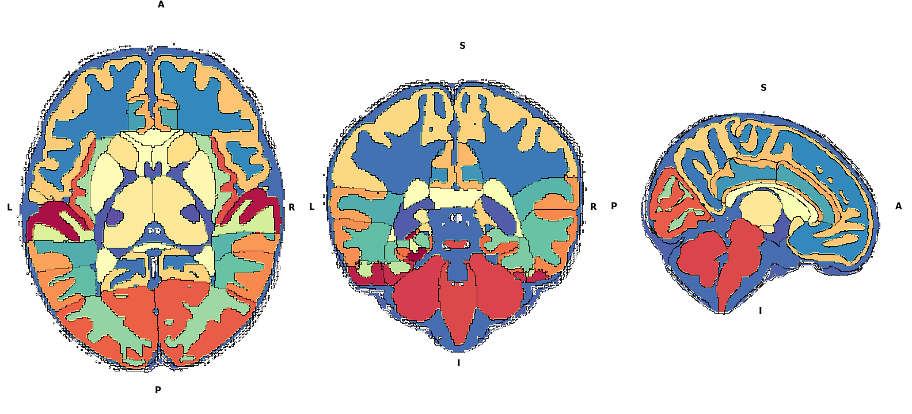

Visualisation tools
The following plots can be created:
Brain maps
Basics commands
The visualisation.Brainmap function requires nibabel to read NifTi files. The Nifti file in question must be a segmentation file, where each value corresponds to a label. One can visualise this file like so:
visualisation.Brainmap.plot_segmentation(atlas_file='/path/to/nifti')
Here is an example output
The working of this is simple. First, the nifti file values are read into two identical numpy arrays. From here, one of the numpy array is used to “colour”, and one to plot outlines. So if in your nifti file, value 1 corresponds to hippocampus, then a black outline will trace along the edges of that hippocampus. This outline process is repeated for each structure. The structures are differentiated by having different values in the array. This allows us to do the following things:
*Hide regions*
visualisation.Brainmap.plot_segmentation(atlas_file='/path/to/nii.gz',
regions_to_hide=[i for i in lobe_only.keys()])
Here, the values in regions passed to regions_to_hide is set to NA. So the function knows not to colour them. You can also hide the outlines of the NA regions by setting outline_regions_to_hide to False.
*Plot values and mask regions based on threshold*
Suppose you have done some statistics, and now you wnat to colour the regions based on that values. To do this you need to pass in the plot_values argument. It is a dictionary, where the dictionary keys are the region interger value, and dictionary values is the plot value. If the key is not present in the plot_values dictionary, then the plot value is set to NA, i.e. it is not plotted.
plot_val = {k:p for k,p in zip(range(1,88),np.random.random(87))}
# dictionary, where keys are the segmentation label, and values are the
# values to plot
mask = {k:p for k,p in zip(range(1,88),np.random.random(87))}
fig,axes = plt.subplots(1,3,figsize=(20,15))
_,_ = visualisation.Brainmap.plot_segmentation(
atlas_file='/path/to/nii.gz',
map_view=['axial'],
plot_values=plot_val,axes=axes[0],colorbar=True,fig=fig)
_,_ = visualisation.Brainmap.plot_segmentation(
atlas_file='/path/to/nii.gz',
map_view=['axial'],
plot_values=plot_val,
plot_values_threshold=0.50,
axes=axes[1],colorbar=True,fig=fig)
_,_ = visualisation.Brainmap.plot_segmentation(
atlas_file='/path/to/nii.gz',
map_view=['axial'],
plot_values=plot_val,
plot_values_threshold=0.50,
mask=mask,
axes=axes[2],colorbar=True,fig=fig,cmap='Greens')
Plot label legends
The label_legend is also a dictionary in the same format as plot_values, where the dictionary key is the segmentation label, and the dictionary value is the string label. By default regions that have the same string label, only the boundary of the group is drawn, and the regions that do not have keys in the legend dictionary are not outlined. To turn off this option, set outline_label_legends to False. By default, the legend will be created based on the unique values in the label_legend, where each value will be given a colour. The legend box position and fontsize can be controlled (use at your own perils). Use combinations of regions_to_hide and label_legend to create different plots.
fig,axes = plt.subplots(1,3,figsize=(20,15))
_,_ = visualisation.Brainmap.plot_segmentation(
atlas_file='/path/to/nii.gz',
map_view=['axial'],
label_legend=lobe_only_legend,
outline_label_legends=False,axes=axes[0],fig=fig,label_legend_bbox_to_anchor=(-1.5,-0.25,0,0),label_legend_fontsize='xx-large')
_,_ = visualisation.Brainmap.plot_segmentation(
atlas_file='/path/to/nii.gz',
map_view=['axial'],
label_legend=lobe_only_legend,axes=axes[1],fig=fig,legends=False)
_,_ = visualisation.Brainmap.plot_segmentation(
atlas_file='/path/to/nii.gz',
map_view=['axial'],
regions_to_hide=remove_regions,
label_legend=lobe_only_legend,
outline_label_legends=False,
outline_regions_to_hide=False,axes=axes[2],fig=fig,legends=False)
Additional options
Changing view slice and orientation
You can select multiple views by setting map_view option or atlas_slice. By default, the function will view the middle slice in all 3 orientations (axial, coronal and sagittal). The slice visualise across any direction can be customised.
Note
The plot can only be plotted if the slice contains non-NA values in the numpy array. For example, even if the axial view has shape 200,274. It may not plot slices from 0 to 20 if the numpy array has only NA values.
atlas_slices = [int(i) for i in np.linspace(50,180,9)]
fig,axes = plt.subplots(3,3,figsize=(20,15))
axes = axes.flatten()
for ax,atlas_slice in zip(axes,atlas_slices):
if atlas_slice == 115:
_,_ = visualisation.Brainmap.plot_segmentation(
atlas_file='/path/to/nii.gz',
map_view=['axial'],
atlas_slice = atlas_slice,
label_legend=lobe_only_legend,
outline_label_legends=False,
axes=ax,fig=fig,
legends=True,
label_legend_bbox_to_anchor=(-2.0,-0.25,0,0),
label_legend_fontsize='xx-large')
else:
_,_ = visualisation.Brainmap.plot_segmentation(
atlas_file='/path/to/nii.gz',
map_view=['axial'],
label_legend=lobe_only_legend,
outline_label_legends=False,
atlas_slice = atlas_slice,
axes=ax,
legends=False)
plt.tight_layout()